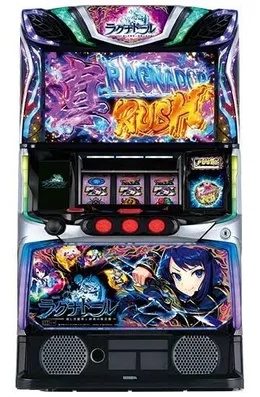

DATA通常時だけ数える
AT ―
CZ ―
回転数・AT初当り・CZは通常時で数えてください（AT中は除く）。CZは空欄ならAT初当りだけで計算します。
結果
確率の目安数字を入れて「判別する」を押すと、設定1〜6の可能性がここに出ます。

ミズホ／2026年11月2日導入
AT初当り 1/326.4〜1/258.3／機械割 97.6〜114.5%
AT初当りは1/307.7→1/271.2、CZは1/161.8→1/145.0と、設定4から一気に軽くなる。設定4〜6どうしはほぼ同じなので、「4以上かどうか」を見る機種。CZも数えて足す。
回転数・AT初当り・CZは通常時で数えてください（AT中は除く）。CZは空欄ならAT初当りだけで計算します。
数字を入れて「判別する」を押すと、設定1〜6の可能性がここに出ます。
終了画面・トロフィーなどの設定示唆は、導入前の時点でまだ公表されていません。出たらここに押せるボタンを足します。
導入前なので、数字は解析サイトの公表値です（3サイトで一致）。通常時の打ち方の手順はまだどのサイトにも載っていません。出たら打ち方の章に書き足します。
| 設定 | AT初当り | CZ | 機械割 |
|---|---|---|---|
| 1 | 326.4 | 172.8 | 97.6 |
| 2 | 317.2 | 167.2 | 98.8 |
| 3 | 307.7 | 161.8 | 100.3 |
| 4 | 271.2 | 145.0 | 105.7 |
| 5 | 260.8 | 143.0 | 110.5 |
| 6 | 258.3 | 142.4 | 114.5 |
確率は「1/〇〇」の分母。数値はちょんぼりすた・パチマガスロマガ・P-WORLDで一致。50枚あたり約31.0G（設定1）。導入予定は約10,000台です。小役確率は未公表です。
打ち方の手順が解析サイトに出たら、このページに追記します。最新の情報は次のページで確認できます。
天井と立ち回り（ちょんぼりすた） ↗ スペックと天井（パチマガスロマガ） ↗スマスロ ラグナドールで設定差が公表されているのは、AT初当り（設定1 1/326.4、設定6 1/258.3）とCZ（1/172.8、1/142.4）です。特徴は、どちらも設定3と4の間に段差があることで、AT初当りは1/307.7から1/271.2へ、CZは1/161.8から1/145.0へと一気に軽くなります。一方で設定4・5・6の間はほとんど差がなく、CZは1/145.0・1/143.0・1/142.4です。このため本機の判別は「設定4以上かどうか」を見るものと考えると分かりやすくなります。3000G回したときの平均は、AT初当りが設定1で約9.2回・設定6で約11.6回、CZは約17.4回と約21.1回です。
このツールと同じ計算で、設定6の台を打ったときに「設定4以上の合計が80％以上」になる割合をシミュレーションすると、AT初当りだけでは3000Gで約5％、8000Gで約19％でした。CZも入れると、3000Gで約16％、5000Gで約29％、8000Gで約46％まで上がります。CZは回数が多いぶんブレが小さいので、AT初当りと合わせて数えるのがおすすめです。設定1の台で同じ結果になってしまう割合は2％ほどです。
天井はCZ間500G＋α、AT間999G＋αで、設定変更後はAT間が500G＋αに短縮されます。AT間のゲーム数は通常時だけを数え、CZ中は含まないとされているので、判別に使う回転数も通常時だけにしてください。AT終了後は初回CZまで出玉率が100％を超えるとされています。終了画面などの設定示唆は導入前の時点でまだ公表されていないため、判明したらこのページに追加し、計算に使えるようにします。
データカウンターでAT初当りとCZの回数を見られる場合は、打つ前の台選びにも使えます。設定4以上の合計が高めに出た台を候補にし、打ちながらCZの回数を足していくと、判断が少しずつ固まっていきます。CZが設定1の1/172.8より明らかに重い場合は、低設定寄りと見てよいでしょう。期待差枚は機械割の加重平均で、残り時間が短いほど小さくなります。
| 設定 | AT初当り | CZ | 機械割% |
|---|
解析サイトの公開値です（2026年10月27日時点。2026年11月2日導入予定、メーカーはミズホ）。AT初当り・CZ・機械割は、ちょんぼりすた・パチマガスロマガ・P-WORLDで一致しています。